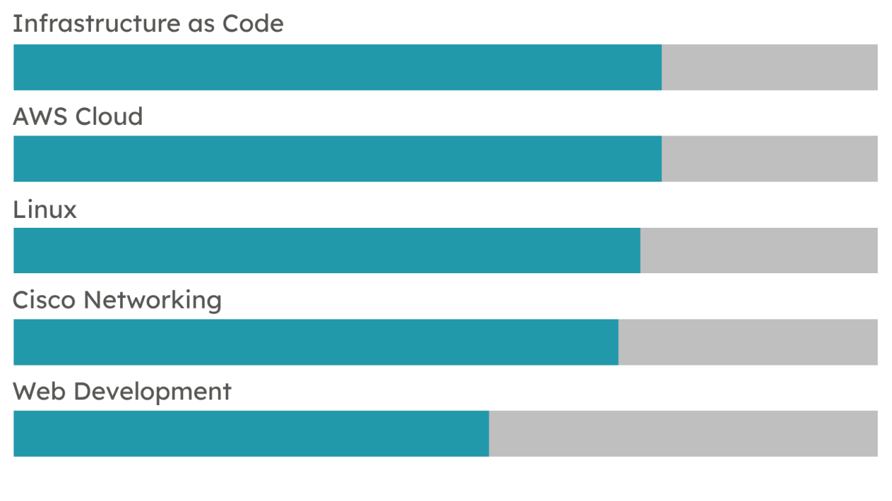

Skills
Hard Skills

Soft Skills

Welcome to my online portfolio! I'm thrilled to have you here. Through this website, I aim to provide you with a glimpse into my world, showcasing my skills, experiences, and creative endeavors. Thank you for visiting, and I hope you enjoy your stay.
I am Wim Hembrechts, a bachelor student in Elektronica-ICT with a focus on Cloud & Cybersecurity at Thomas More in Geel. Since I was 18, I have also been a leader in the scouts of Mol-Achterbos.
After high school, I initially delved into the world of industrial sciences. As time went on, I discovered that wasn't quite the right fit for me. Determined to follow my instincts, I made the switch to the realm of IT. Specifically, my focus shifted toward the rapidly evolving domains of cloud and cybersecurity.
For this reason, I chose the IT Factory of Thomas More.
During the internship, I was a member of the OpsKlaar team within the company, ACA Group. This team is responsible for developing, maintaining, monitoring, and troubleshooting the cloud environments of their clients. My job within this team was to improve the security of the cloud environment they use as a starting point for each new client.
To improve the security of this environment, I was given the task of checking whether the EKS cluster complies with the EKS security best practices provided by AWS. Alongside the compliance check, I was also tasked with researching and implementing additional components into the standard environment while still complying with EKS security best practices.
The components I had to research and implement included encryption of secrets stored inside etcd, establishing a robust policy enforcement mechanism, and finding a suitable replacement for pod security policies because this feature is removed in later versions of Kubernetes. Additionally, I focused on implementing a vulnerability scanner for container images to identify CVEs and deploying a detection system to identify any unwanted or potentially harmful processes at the container level.
In short, my internship at ACA Group offered me the unique opportunity to bridge the gap between the theoretical knowledge acquired during my studies and its practical application in the working industry. My internship experience in the cloud sector left me feeling confident and prepared to embark on my professional career.
Below you will find the documents that I have produced as part of my internship.
These documents go into more detail on certain aspects of my internship:
Plan of approach
Realization document
Reflection
Daily status report
Project 4.0 is a group project given to the 3rd year students of the IT factory. Each group consisted of a mix of students from almost every major. The assignment was given by an external employer.
3-IT gave us the assignment to design and build an energy monitoring application that used data from digital electricity meters. We then had to visualize this data using a few graphs.
As the only CCS student in my team, I was responsible for provisioning the Azure cloud environment on which our application would run. I chose to fully automate the deployment of our application and database with the help of GitLab CI/CD and Terraform. Since I was the only one on the team who had a digital electricity meter at home, I was tasked with gathering data from the meter and sending this data to a database. Of course, there were other tasks that had to be completed, such as creating the application itself and visualizing the data in the application, this was the responsibility of the other team members.
We used an Azure App Service to host our Docker image, which contained our custom-made Django application. This application was connected to our Azure SQL database, which received all its data from a Raspberry Pi connected to a digital meter. As visualization software, we used Qlik Sense.
During Project 4.0, I gained valuable experience in provisioning and automating cloud environments, and I learned how to gather and process data from digital electricity meters. Working with team members from different majors taught me the importance of planning. The communication part of this project wasn't always easy because everyone came from a different field of study and therefore had different skills and knowledge. In the end, we managed to make it work.
In these documents, you can find more information about this project:
Project hand over
Customer user manual
In our Cloud Engineering classes, we have learned to apply DevOps principles to our workflow. For this, we learned to work with GitLab, Git, Terraform, APIs, etc. To prove our proficiency in these matters, we (my fellow team members and I) were tasked with deploying a web application with a database on AWS. We had to use as much IaC as possible, which meant we had to use Terraform to provision our resources and use the GitLab CI/CD pipeline to automate the testing and deployment of our application.
We picked Vichan as the application to deploy. Vichan is an image board where people can post pictures and make threads to converse with each other.
We've used AWS Elastic Beanstalk to host our application, which was delivered as a Docker image. For our database we used RDS and coupled it with our Elastic Beanstalk environment. To make the image on the image board persistent, we automounted an EFS share in our EC2 container. Discord notifications were used to keep track of our pipeline status.
My contribution to this project was writing the majority of the Terraform and GitLab CI/CD code to provision our AWS environment. I am also partly responsible for creating our custom Docker image containing our Vichan application.
In this Cloud Engineering project, I not only gained technical proficiency in tools like GitLab, Git, Terraform, and APIs but also developed essential soft skills such as teamwork, communication, and problem-solving. By choosing Vichan, however, we had made it a bit difficult for ourselves. As a result, our plan was no longer feasible, and we had to omit certain aspects of our project.
For more information about this project, you can consult this GitLab repository: aws-iac-challenge.
During last summer's holiday job at the company where my father works as a consultant, I took on the task of implementing a monitoring and alerting system for Vink BE's Kubernetes clusters. Over the course of seven weeks, I successfully deployed this system, filling a crucial gap in their infrastructure.
This monitoring system consisted of several essential tools. Prometheus acted as the core data collection and storage component, enabling efficient monitoring and metric retrieval. Thanos extended Prometheus by providing a scalable, fault-tolerant, and persistent storage solution. Loki facilitated log aggregation and analysis, while AlertManager handled alert notifications for timely incident response. Finally, Grafana served as the intuitive visualization platform, allowing administrators to gain valuable insights from the collected metrics and logs.
Working on the implementation of the monitoring system for Vink BE's Kubernetes clusters was an invaluable learning experience. Throughout the project, I acquired a deeper understanding of the inner workings of cloud infrastructure. I also developed important soft skills such as problem-solving, project management, and independent work because this was a solo project.
Throughout my internship, I utilized most of my spare time at home to delve into the creation of a personal home lab centered around a Kubernetes cluster.
Currently, I have set up my home lab using virtual machines running on my laptop. These virtual machines are provisioned using Vagrant and further configured with the help of Ansible playbooks. This provides a convenient environment for testing and experimentation. However, in the future, I would like to migrate this cluster to a dedicated server, allowing for enhanced scalability and performance.
In addition to its current setup, my ultimate goal for the home lab is to utilize it for various purposes, such as running a Nextcloud server, hosting a web server, creating a home media center, experimenting with smart home technologies, and serving as a testing environment.
This multifunctional home lab will allow me to continuously learn in a practical and hands-on manner. Through this project, I also enhanced some of my abilities like problem-solving, self-motivation, and adaptability as I explored various ways of setting up a Kubernetes home lab and because many components require a different approach, fostering continuous learning and skill development.